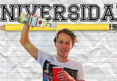
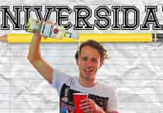
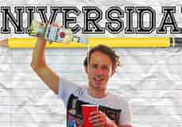

En cuanto a mis gustos me gusta mucho el futbol es mi deporte favorito, y mi jugador favorito es cristiano ver series, mi serie favorita es thw walking dead
me gusta pasarlo bien con mis amigos ya que disfruto de su compañia en fin me considero una persona sencilla y productiva.
Me considero un super fan de la formula 1 por lo que cada domingo ni me pierdo ningun gran premio mi conductor favorito es Fernando alonzo y pues tambien
me gustan otras categorias como formula E entre otras.


Hasta ahora mi logro mas inmportante es lograr ser Maestro de natacion me gradue hace tres años
en la escuela de natacion "kukulcan"

| Logro | fecha Del Logro | Importancia |
|---|---|---|
| maestro de natacion | 12 de mayo del 2016 | mucho |
| Entrar a la universidad | 30 de agosto del 2021 | mucho |
| Enocontrar trabajo | 10 de mayo del 2002 | mucho |